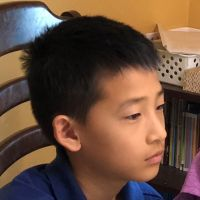

Community priorities
The community identifies what they need, and we build the project around those priorities.
About us
Bringing together student volunteers to support Native communities through projects based on community needs.
Our story
Indigenous Futures Initiative is a student-led organization based in the Bay Area that works with Native communities through education, STEM, engineering, technology, and community-led projects.
We work directly with tribes, tribal education departments, and Native organizations to understand where student support could be useful. Each community can decide what type of support would be most helpful, and we will build the project around that.
Starting a project
The community identifies what they need, and we build the project around those priorities.
We work together to decide what the project should look like and what support would be most useful.
Our volunteers contribute their skills through tutoring, STEM, engineering, and other areas.
Our team

Co-Founder
Lucas helps lead Indigenous Futures Initiative by building partnerships, organizing projects, and connecting student volunteers with opportunities to support Native communities.
Co-Founder
Aiden helps develop projects, coordinate volunteers, and support the organization’s education, STEM, and community initiatives.
Co-Founder
Jonathan helps lead the organization and contributes to planning projects, supporting volunteers, and expanding opportunities for students to get involved.